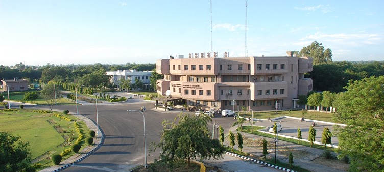
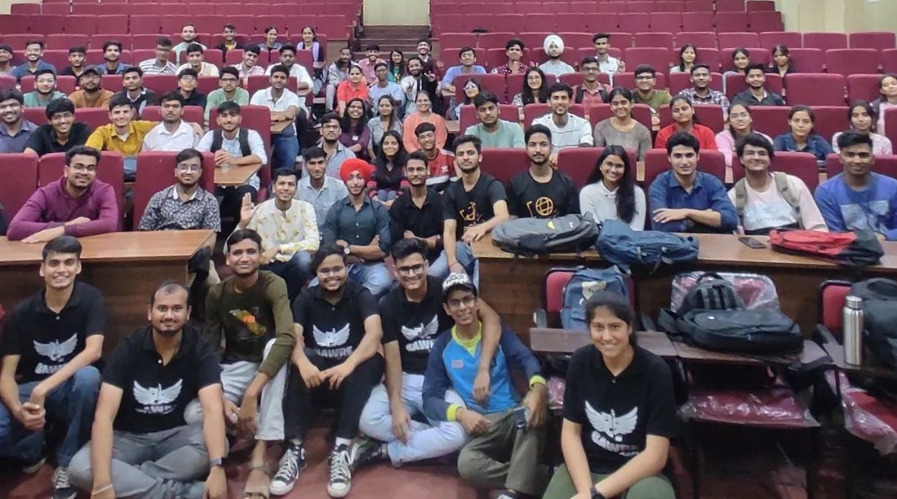
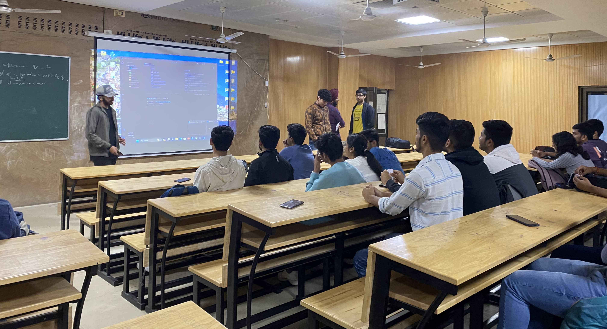
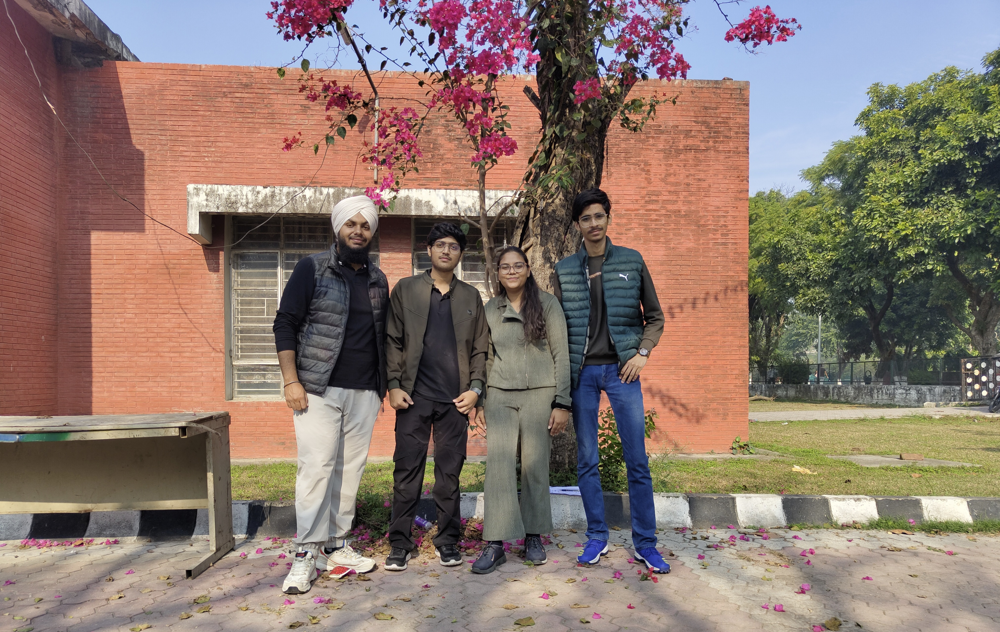

.png)
You can't miss out these...
 Why do we shake hands as a greeting?🤝
Why do we shake hands as a greeting?🤝 Ever wondered why we say 'bless you' after a sneeze?🤧
Ever wondered why we say 'bless you' after a sneeze?🤧 Why are Fridays considered lucky in many cultures?🤞
Why are Fridays considered lucky in many cultures?🤞 Why do we make wishes on birthday candles?🕯️
Why do we make wishes on birthday candles?🕯️  What's the story behind the invention of the sandwich?🥪
What's the story behind the invention of the sandwich?🥪
As I sit back and reflect on my first semester at NIT Jalandhar, I'm struck by the whirlwind of experiences that have shaped my journey, starting from the excitement of my journey to college. The orientation sessions marked the beginning, setting the tone for what was to come. The very first class, an English communication lab, sparked anticipation and eagerness for the adventures and learning that awaited in this prestigious institution. My pursuit of a B.Tech in Information Technology unfolded as a roller coaster of academic challenges, interspersed with extracurricular triumphs and the creation of unforgettable memories. The blend of structured education and the vibrancy of college life has truly made this journey a rich and transformative experience.
Academic Pursuits:
Navigating the intricate world of Information Technology, the academic challenges of my first semester at NIT Jalandhar were both stimulating and demanding. From coding assignments to comprehensive exams, the academic rigors pushed me to explore the depths of my chosen field. The strong faculty support and cutting-edge curriculum have laid a solid foundation for the exciting journey ahead.
Extracurricular Triumphs:
SI CREW - The Dance Club:
In the realm of dance, SI CREW has not only been a club but a sanctuary for artistic expression.Our dance journey started through invigorating workshops. These sessions weren't just about mastering choreography; they became a celebration of diverse dance styles and a melting pot of creativity. The anticipation of upcoming events adds a rhythmic excitement to our dedicated practice sessions. As I look forward to our first performance, the bond forged in the workshops sets the stage for a spectacular dance narrative.
Bawre - The Drama Club:

Enrolling in Bawre, the drama club, added an exciting dimension to my college experience. Although no events had taken place, the Meet and Greet session and auditions provided a glimpse into the club's potential. The Meet and Greet session fostered a sense of community, encouraging members to share ideas and discuss future plans. During auditions, tasks like crafting stories from given starting lines and conducting interviews not only showcased creativity but also hinted at the promising and collaborative journey ahead. This early phase of involvement set the stage for the artistic and community-driven experiences yet to unfold within the club.
Cybernauts - The IT Club

Being part of Cybernauts, the official IT club, has significantly influenced my first semester. One notable experience during the end-of-semester break was collaborating on the Inspiro project, a blog page, with my talented teammates Baani and Diya. This joint effort enabled us to explore creative and innovative approaches, emphasizing our commitment to continuous learning even during breaks. It was a gratifying venture that not only enhanced my technical skills but also fostered a deeper appreciation for collaborative initiatives within the technology space.
Hostel Library and Cultural Secretary:
Taking on the responsibilities of the Hostel Library and Cultural Secretary was a fulfilling experience. It involved managing the literary needs of fellow residents. The role not only honed my organizational skills but also allowed me to contribute to creating a lively and engaging hostel community.
Cherished Memories

Beyond the academic and extracurricular pursuits, my first semester was dotted with moments that will remain etched in my memory. From the thrill of a successful treasure hunt with friends – including Manan, Jashnoor, and Diya – to the laughter and camaraderie at Bharat Dhwani, an event organized by the college, every experience added a layer to my college narrative.
The freshers' party was a highlight, meticulously organized and filled with performances that showcased the diverse talents of my classmates. Being a part of the Qawwali and a dance performance was not just an opportunity to showcase my skills but also a chance to bond with classmates in a vibrant and celebratory atmosphere.
Academic Achievement
Ending the semester with a commendable CGPA of 9.15 was the cherry on top. It validated the hard work, dedication, and time management skills that I had cultivated throughout the semester. Striking a balance between academics and extracurricular activities proved to be a rewarding endeavor.
Conclusion
As I conclude my reflection on the first semester, I am filled with gratitude for the opportunities, the challenges, and the growth that came my way. NIT Jalandhar has not just been an academic institution; it has been a canvas for self-discovery, personal development, and the forging of lifelong connections. I eagerly anticipate the semesters to come, knowing that each one will bring new challenges, triumphs, and the promise of continued growth.